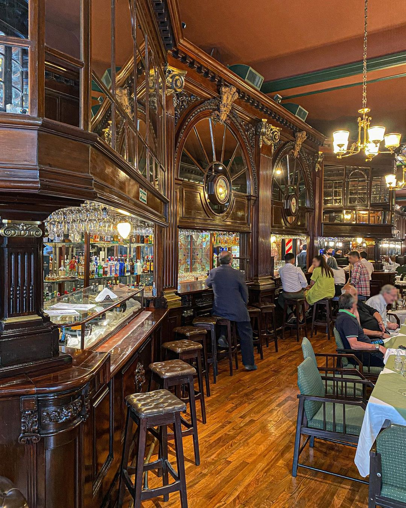
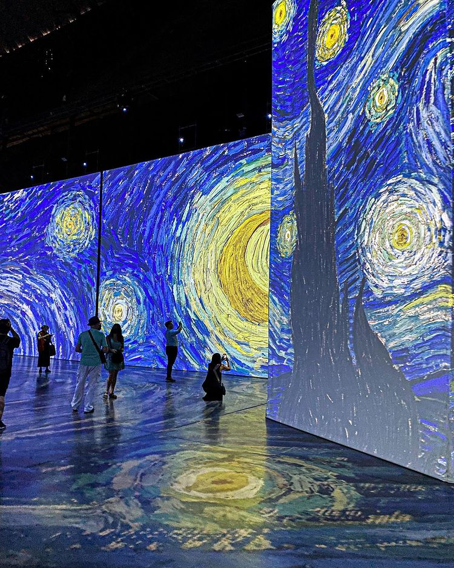
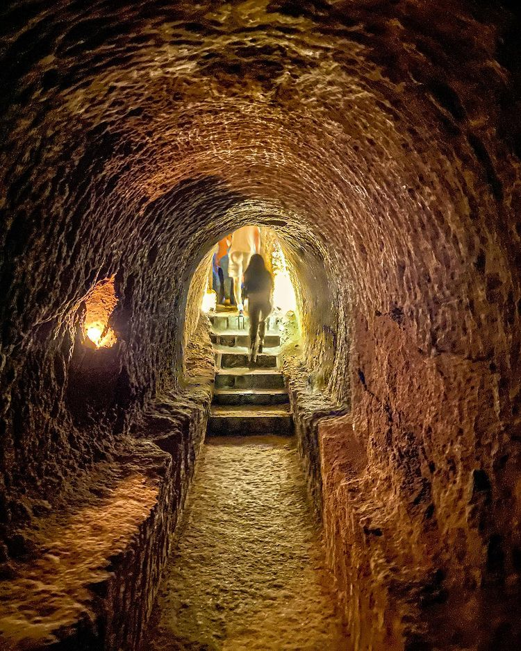

Para entender la Buenos Aires artística es recomendable visitar los bares y las cafeterías del siglo XIX que fueron frecuentadas por grandes literatos y músicos, y hoy son patrimonio cultural. En el icónico Café Tortoni (el más antiguo de todos, fundado en 1858) aún se pueden presenciar espectáculos de tango.
CULTURA

Historia

Arte
Buenos Aires es sinónimo de arte. La combinación cultural de influencias europeas y latinas ha inspirado a numerosos artistas a constituir su propio estilo. Decenas de museos y galerías de arte exponen el trabajo de nuevos y renombrados exponentes; tambien, muchos talentos presentan sus obras en espacios al aire libre, como calles y parques.

Experiencias
Buenos Aires es una ciudad multicultural que acogió a Españoles, Italianos, Franceses, Alemanes o polacos, quienes fijaron su residencia en esta maravillosa ciudad desde 1534, para hacer de esta la segunda ciudad más grande de todo el hemisferio sur. Si quieres saber qué visitar en Buenos Aires y Argentina, te dejamos algunas experiencias para que disfrutes de lo mejor de la ciudad.